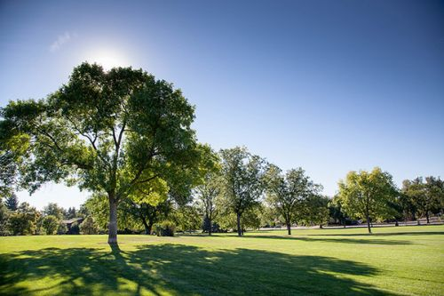

Gracie's Portfolio

Background
I am a second year studying Computer Science at California State University, Fullerton. I love learning in general and have a passion for technology. My early exposure of computers has led me to take classes throughout junior high, high school, and college. The never ending growth of technology inspires me to learn more about how and why it works. Currently, I am working on multiple jobs, projects, and extracurriculars related to my major.
Projects
Finished
-
National Park Service Information Kiosk
This project is a web application that was submitted to Capital One's MindSumo Challenge. This web application’s purpose is to help users find information involving the national parks in the United States by using the National Park Service API. The project utilizes HTML, CSS, JavaScript, and Bootstrap to create a visual interface to search information through the National Park Service API. The website is responsive to any device and adjusts its layout accordingly, allowing mobile devices to access this website as well.
Website: https://gracieorozco.github.io/National-Park-Service-Information-Kiosk/
Repository: https://github.com/gracieorozco/National-Park-Service-Information-Kiosk
-
Summer 2019 Research
With the CSU Fullerton's organization, ASSURE-US, I researched concepts involving data science using Python and Jupyter notebook by completing a small-scale data science project on a topic of preference to understand the mathematics behind data science. My research discovered which factor within college admissions is the best indicator in predicting salary earnings.
-
RideShare - LAHacks 2019
Hackathon project that allows users to help people search for drivers from a start destination to an end destination. I focused on front-end work using Bootstrap, HTML, CSS, and JavaScript to create the website.
Repository: https://github.com/gracieorozco/RideShare
In Progress
-
Agenda
This project is an online agenda that uses the local storage of a browser to store to-do list items for a templsted week in a minimalistic way. I plan to expand this to reflect the month and years while incorpoating some other productive habits.
-
HTML/CSS Tutorial Website
This website is a quick quide to explain the basics of HTML and CSS. I provide information on the structure and a description of common tags. I plan to expand this idea later on by adding JavaScript and other technologies and frameworks such as Bootstrap and more. I would hope that this website would be used in future projects to quickly understand the core concepts to ease time constraints.
-
Computer Science Fundamentals Website
I plan to make a website based on the knowledge I learned throughout my college years. This will incorporate the basic and core classes of computer science such as object-oriented programming, data structures, operating systems, and more. My main goal for this program is to help future students understand the expectations of the major and give them a headstart in their learning.
-
Software Engineering Class Project
I will be creating an inventory management system using Flask, Firebase, Python, HTML, CSS, and JavaScript with four other members.
-
Compiler Class Project
I will be creating a compiler in C++.
LinkedIn and Github
LinkedIn: https://www.linkedin.com/in/graciela-orozco/
Github: https://github.com/gracieorozco
Image Gallery
One of my favorite places to go is the library to study and learn new things. I also like to go to malls and parks in my free time.
What I Like to Photograph
I take these photos to recall memories I had with the pictures. The main pictures I like to take are of my family and friends. I take these photos to recall memories I had with the pictures. Later on, I plan to compile these photos and make an album to reminisce throughout my life. My family would often make albums of their children when they were younger, and I want to do the same, but throughout life.
I also like to take pictures of animals and nature. Most of my pictures of cats that I find throughout my neighborhood. Unfortunately, most of the pictures are blurry since they run away. Aside from that, I also like to take pictures of nature and scenery. Looking back on these pictures make me feel at peace. I would like to make an album in the future to revisit all the views I have seen throughout my life.
Hidden Talent: Time Management - Blog Posts
2/20/20
I started the day off by working on my portfolio for the Google SPS program. Since I was thinking about what I should put throughout the week, the inputting the text was not too difficult. Once I arrived at school, I went to retrieve the homework I needed to grade over the weekend. I then studied a bit more for my quiz for one of my classes today and organized one of my organization's drive as a proposal to help with managing files before I headed to class. I then reviewed a pull request for my research project and continued to study for my quiz. Afterwards, I went to class then worked more on the SPS portfolio website while waiting for my fifth class. Once my fifth class finished, I worked more on the SPS portfolio website since the cloudshell wasn't saving the changes I was making in the afternoon. I then went to one of my club meetings for a major summit event we are planning the first Friday of March of 2020. I then finished most of the SPS website at this point since I found out that my error was me changing the wrong files. Before going to bed, I made minor adjustments to my flutter mobile research project and created logos for one of the organization I am in.
2/19/20
Starting my day at 4am, I went to work and had to reinstall all of my software on my new computer with another individual. I was able to finish a task given to me and submitted a pull request while also finishing half way of another task. Afterwards, I went to run errands then returned home at 7pm. Then, I worked on my research project to make small adjustments to the design. Since there was not much communication within my group, I began to look into some of the code written by others to modify for future reference. Later on, I created pull request which was accepted. Later on, I made other minor adjustments before studying for my quiz until 10pm.
2/18/20
At the start of the day, I started to finalize my features for flutter mobile research project. I was able to create my nutritonal calculator before my first class. Afterwards, I worked three hours on my mobile project finalizing the embedded website and the additional screen. Then, I went to my classes and began installing my environment for my software engineering Flask inventory tracking system project. Exhausted from programming five hours while studying for classses, I slept early this day in preparation of my work at 4am the following day.
Click here to get a random fact about myself: